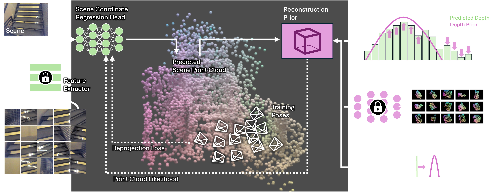

Scene coordinate regression (SCR) models have proven to be powerful implicit scene representations for 3D vision, enabling visual relocalization and structure-from-motion. SCR models are trained specifically for one scene. If training images imply insufficient multi-view constraints SCR models degenerate. We present a probabilistic reinterpretation of training SCR models, which allows us to infuse high-level reconstruction priors. We investigate multiple such priors, ranging from simple priors over the distribution of reconstructed depth values to learned priors over plausible scene coordinate configurations. For the latter, we train a 3D point cloud diffusion model on a large corpus of indoor scans. Our priors push predicted 3D scene points towards plausible geometry at each training step to increase their likelihood. On three indoor datasets our priors help learning better scene representations, resulting in more coherent scene point clouds, higher registration rates and better camera poses, with a positive effect on down-stream tasks such as novel view synthesis and camera relocalization.
We reinterpret the common training objective of scene coordinate regression (SCR) models in a probabilistic manner, and infuse high-level priors that regularize the reconstruction. Below, we show maps learned by ACE with and without our 3D point cloud diffusion prior. Use the controls to switch between scenes.

Left: SCR methods like ACE or ACEZero learn an implicit scene representation by optimizing a reprojection loss on training images. Right: We add various priors as additional regularization. A depth distribution prior punishes significant divergence of reconstructed depth values from a target distribution. A 3D point cloud diffusion prior uses a pre-trained generative model to steer the reconstruction towards plausible scene layouts. A depth prior pushes reconstructed scene coordinates towards measured depth, if RGB-D training images are available.
Sometimes, ACE0 reconstructions degenerate due to insufficient multi-view constraints in the training images. This leads to cameras and scene geometry floating in space. Our priors can prevent such degenerate reconstructions, as shown below. Use the controls to switch between priors.
@inproceedings{bian2025scrpriors,
title={Scene Coordinate Reconstruction Priors},
author={Bian, Wenjing and Barroso-Laguna, Axel and Cavallari, Tommaso and Prisacariu, Victor Adrian and Brachmann, Eric},
booktitle={ICCV},
year={2025},
}